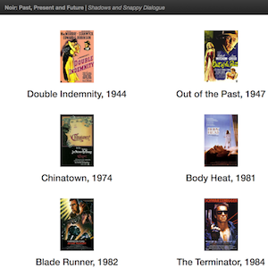
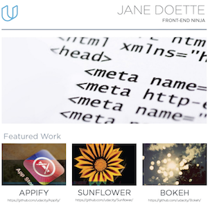

Featured work

Udacity FSND
General repository for Udacity Full Stack Nanodegree program (FSND) course notes and materials. Step right up and learn about the cool things I'm doing with Udacity!

Movie site
Server-side code written in Python to store a list of my favorite movies, including artwork and trailers, then serve the data to a local webpage with HTML and CSS.

Portfolio site
This website! We were provided with a design mockup (screenshot) of a developer portfolio webpage, and had to replicate the design with HTML and CSS.